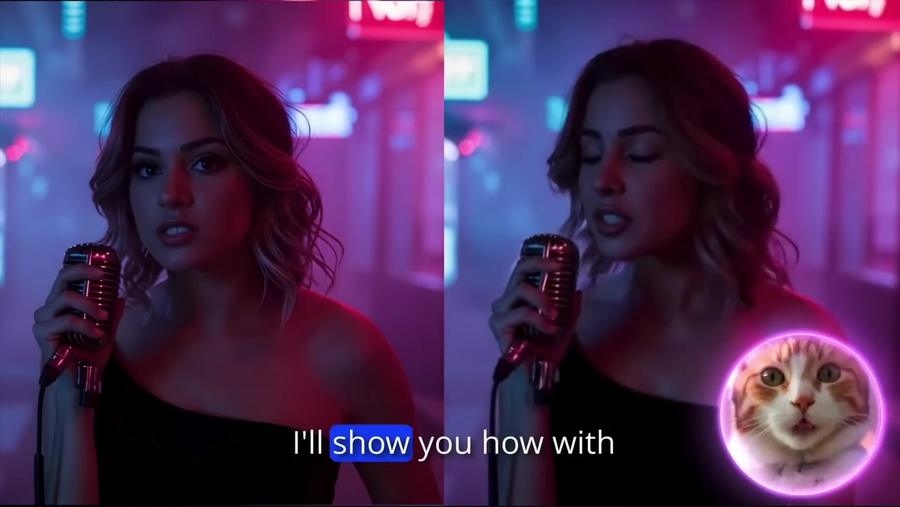
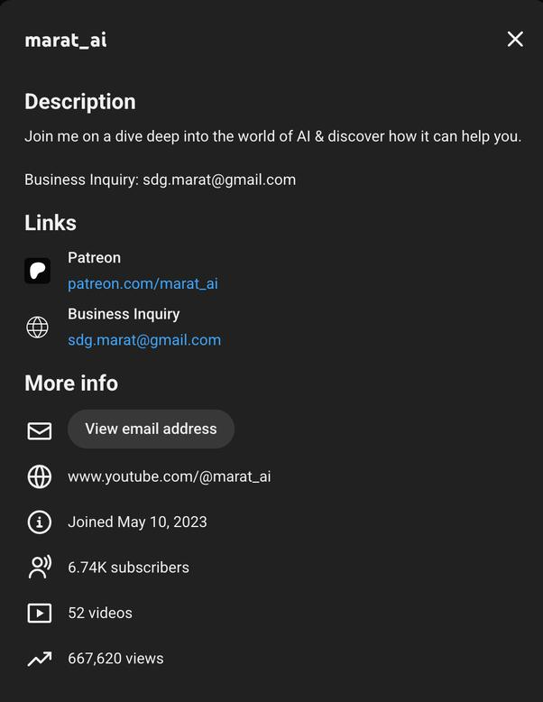
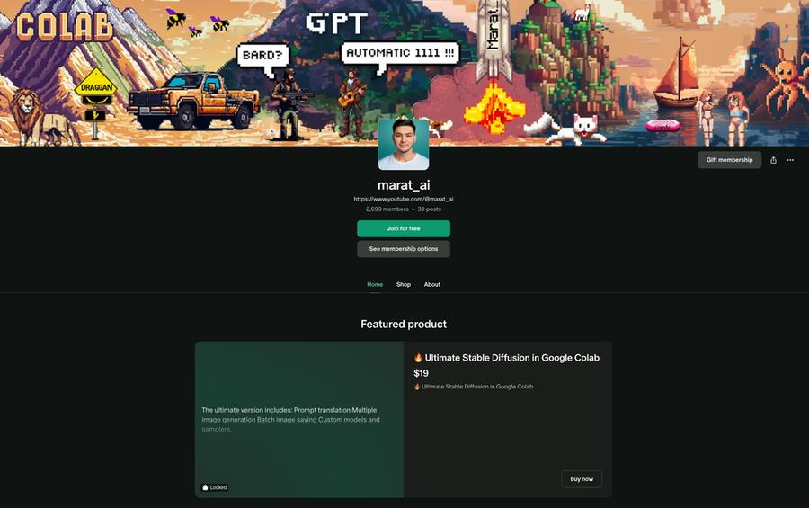

2024 – present · youtube.com/@marat_ai
From open-source release to paying subscriber
I take fresh open-source AI models and wrap them into tools people can actually run: Jupyter notebooks with custom Gradio interfaces, ComfyUI workflows and LoRA models trained on request. Each tool gets a search-focused YouTube tutorial and Reddit posts, some reaching 800K views. After publishing I repackage titles and thumbnails to catch more search demand.
Monetization moved in three steps: one-off PayPal sales, then Patreon subscriptions, then higher-priced one-time purchases for buyers who did not want a subscription.



DiscoverSearch tutorialYouTube and Reddit, packaged for search
TryFree notebook30+ tools, 400K+ users
UpgradePaid versionExtra features and custom workflows
StayPatreon3,000+ members, 200+ paying about $10/month